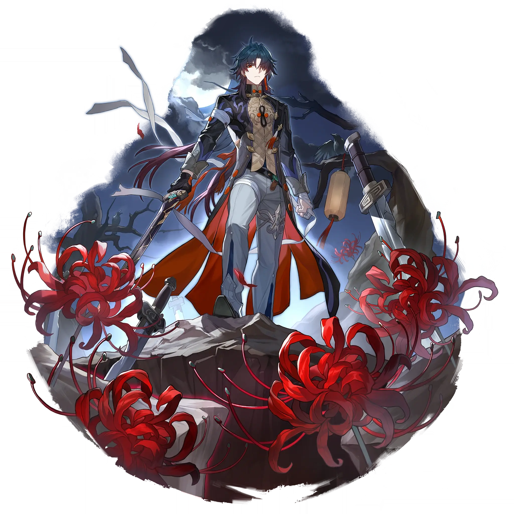

Blade
Best Blade build guide for Honkai Star Rail. See Blade's best Relics, Light Cones, teams, Eidolons, Trace priority, and how to play Blade.
🔍 Detail Skill
Semua skill aktif dan pasif beserta efeknya.
Deals Wind DMG equal to #1[i]% of Blade's Max HP to one designated enemy.
Consumes HP equal to 10% of Blade's Max HP and deals Wind DMG equal to #1[i]% of his Max HP to one designated enemy. In addition, deals Wind DMG equal to #2[i]% of Blade's Max HP to adjacent targets. If Blade's current HP is insufficient, his HP will be reduced to 1 when using Forest of Swords. Forest of Swords cannot regenerate Skill Points.
Consumes HP equal to #1[i]% of Blade's Max HP to enter the Hellscape state. While under the Hellscape state, his Skill cannot be used, his DMG dealt increases by #4[i]%, the chance of receiving attacks from enemy targets greatly increases, and his Basic ATK Shard Sword is enhanced to Forest of Swords for #2[i] turn(s). If Blade's current HP is insufficient, his HP will be reduced to 1 when he uses
When Blade sustains DMG or consumes his HP, he gains 1 stack of Charge, stacking up to 5 times. A max of 1 Charge stack can be gained every time he is attacked. When Charge stack reaches maximum, immediately launches 1 Follow-up ATK on all enemies, dealing Wind DMG equal to #1[i]% of Blade's Max HP. At the same time, restores Blade's HP by 25% of his Max HP. After the Follow-up ATK, all Charges ar
⚔ Light Cone Terbaik
Diurutkan dari yang paling kuat. Persentase menunjukkan performa relatif terhadap pilihan terbaik.
💎 Relic Set Terbaik
Set terbaik untuk karakter ini, diurutkan berdasarkan prioritas.
📊 Stat Utama
Stat yang dicari pada tiap slot.
👥 Tim yang Direkomendasikan
Karakter yang sering dipasangkan bersama Blade.
 Hyacine
Hyacine
 Sunday
Sunday
 Bronya
Bronya
 Cipher
Cipher
 Tribbie
Tribbie
 Ruan Mei
Ruan Mei
🔗 Lanjutkan
Build ini dirangkum dari Prydwen Institute. Starwise tidak menghitung sendiri. Angka bisa berubah setelah patch atau karakter baru rilis.